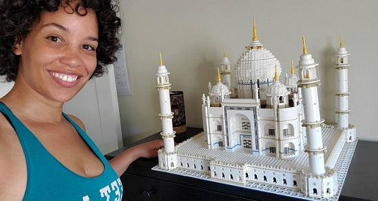
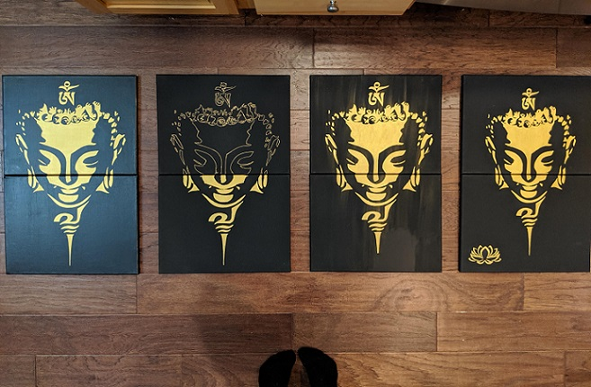

Oh How I Love Arts & Crafts
Buddha Canvas
This was a project I had in mind for years and then I finially purchased a Cricut machine. I don't have it shown here but the original idea was to have 4 white canvases make up the entire image. Once I did that I wanted to try it out in black and gold. I love how it came out!The black pictures shown here were the different variataions in trial and error and their outcomes. On the far left I added a matte modge podge before I put the image on. 2nd from the right, I smeared the paint a bit, and on the far right I added a lotus flower. I also messed around with the sizing on some of them. 
Mini Basketball Tree
Around Christmas of 2021 I came across a video on tiktok of a guy who purchased basketballs and glued them together to form a tree. The idea looked like fun to make. Basketballs are actually expensive and I was not desiring a full size baskebtball tree for myself. This last year (2022) I purchased mini foam basketballs and made a mini tree.Suprisingly it was more difficult than I thought it would be to put fuse these foam together. In the video they guy showed himself using a glue gun. I highly doubt this stuck in the long run but perhaps there is a special gorilla glue he was using and did not share. I bought and tried so many different types of glue and none worked except for . . . NAIL GLUE!
This was how far I got in this project. I was trying to add color lights to it. I bought the led string lights. With all the extra wiring between lights, it got complicated finding the best way to wrap it without all the wiring messing up the aesthitics.